Omnissa Horizon Connection Server 2503 (8.15)
Navigation
This post applies to all Omnissa Horizon versions 2006 (aka 8.0) and newer.
- Change Log
- Upgrade
- Install/Upgrade Connection Server
- Horizon Connection Server Certificate
-
Horizon Portal:
:idea: = Recently Updated
Change Log
- 2025 April 16 - updated for Horizon 2503
- 2023 Jan 20 - added Horizon Console Certificate Management in Horizon 2212.
Upgrade
If you are performing a new install, skip to Install Horizon Connection Server.
Notes regarding upgrades:
- Horizon 2503 is an ESB release.
- For supported upgrade paths (which version can be upgraded to which other version), see Omnissa Interoperability Matrix.
- Horizon 2412 (8.14) and newer require newer Omnissa license keys.
- Horizon 2503 let you rename the AD LDS partition as detailed in Omnissa KB article AD LDS Application Partition Migration.
- Horizon 7 license key does not work in Horizon 2006 (8.0) and newer. You'll need to upgrade your license key to Horizon 8.
- Horizon 8.x no longer supports Horizon Clients 5.x and older.
- According to Omnissa 78445 Update sequence for Horizon 7, Horizon 8, and compatible Omnissa products, App Volumes Managers are upgraded before upgrading Connection Servers.
-
Upgrade all Connection Servers during the same maintenance window.
- Horizon Agents cannot be upgraded until the Connection Servers are upgraded.
- Horizon 2006 (8.0) and newer do not support Security Servers. The replacement is Unified Access Gateway.
- Composer was removed from Horizon 2012 (8.1) and newer. All editions of Horizon 2006 (8.0) and newer support Instant Clones. See Modernizing VDI for a New Horizon at Omnissa Tech Zone for migration instructions.
-
Downgrades are not permitted.
- You can snapshot your Connection Servers before beginning the upgrade. To revert, shut down all Connection Servers, then revert to snapshots.
- For Cloud Pod Architecture, you don't have to upgrade every pod at once. But upgrade all of them as soon as possible.
- All Connection Servers in the pod must be online before starting the upgrade.
- It's an in-place upgrade. Just run the Connection Server installer and click Next a couple times.
- Once the first Connection Server is upgraded, Horizon 2006 (8.0) and newer lets you upgrade the remaining Connection Servers concurrently.
- After upgrading all Connection Servers to Horizon 2012 (8.1) or newer, see Omnissa 80781 Knowledge DML scripts for data population of new columns in view Events Database to backfill the Events Database with column data to improve Events query performance.
- Upgrade the Horizon Group Policy template (.admx) files in sysvol.
- Upgrade the Horizon Agents.
- You can snapshot your Connection Servers before beginning the upgrade. To revert, shut down all Connection Servers, then revert to snapshots.
-
Persona is no longer supported. The replacement is Omnissa Dynamic Environment Manager. Or Microsoft FSLogix. See Modernizing VDI for a New Horizon at Omnissa Tech Zone for migration instructions.
- If App Volumes Agent is installed, then uninstall it before you upgrade the Horizon Agent. See Omnissa 2118048 Agent installation order for Horizon, Dynamic Environment Manager, and App Volumes.
- Otherwise, Horizon Agent is an in-place upgrade. Just run the installer on your gold images and full clones.
- There's no hurry. Upgrade the Horizon Agents when time permits.
- DEM Console should not be upgraded until all DEM Agents are upgraded.
-
Upgrade the Horizon Clients.
-
Horizon Clients can be upgraded any time before the rest of the infrastructure is upgraded.
Install/Upgrade Horizon Connection Server
The first Horizon Connection Server must be a Standard Server. Subsequent Horizon Connection Servers are Replicas. Once Horizon Connection Server is installed, there is no difference between Standard and Replica.
A production Horizon Connection Server should have 10 GB of RAM and 4 vCPU. Each Horizon Connection Server can handle 4,000 user connections.
Horizon 2503 (8.15) is the latest release.
- Horizon 2503 is also an Extended Service Branch (ESB) release, which is supported for 3 years from the April 2025 release date.
To install the first Horizon Connection Server:
- Ensure the Horizon Connection Server has 10 GB of RAM and 4 vCPU. Source = Hardware Requirements for Horizon Connection Server at Omnissa Docs.
- Horizon 2111 (8.4) and newer support Windows Server 2022. Windows Server 2025 is supported in Horizon 2503 and newer. See 78652 Supported Operating Systems and MSFT Active Directory Domain Functional Levels for Omnissa Horizon 8.
- Horizon 2312 and newer no longer support Windows Server 2012 R2.
- Instant Clones in Horizon 2303 and newer require vSphere 7 or newer. vSphere 6.7 and older will not work.
- Download Horizon 2503 (8.15) Horizon Connection Server.
- Run the downloaded Omnissa-Horizon-Connection-Server-x86_64-2503-8.15.0.exe.
- In the Welcome to the Installation Wizard for Omnissa Horizon Connection Server page, click Next.
- In the Destination Folder page, click Next.
- In the Installation Options page, select Horizon Standard Server, and click Next.
- If this is a new pod (not an upgrade), then select if you are using Cloud Pod Architecture or not. If so, then select if the AD LDS partition has been renamed on the other pods or not. Click Next.
- In the Data Recovery page, enter a password, and click Next.
- In the Firewall Configuration page, click Next.
- In the Initial Horizon Administrators page, enter an AD group containing your Horizon administrators, and click Next.
- In the User Experience Improvement Program page, uncheck the box, and click Next.
- In the Operational Data Collection page, click Next.
- In the Ready to Install the Program page, click Install.
- In the Installer Completed page, uncheck the box next to Show the readme file, and click Finish.


Install Horizon Connection Server Replica
Additional Horizon Connection Servers are installed as Replicas. After installation, there is no difference between a Replica server and a Standard server.
A production Horizon Connection Server should have at least 10 GB of RAM and 4 vCPU.
To install Horizon Connection Server Replica:
- Ensure the Horizon Connection Server has at least 10 GB of RAM and 4 vCPU. Source = Hardware Requirements for Horizon Connection Server at Omnissa Docs.
- Horizon 2111 (8.4) and newer support Windows Server 2022. Windows Server 2025 is supported in Horizon 2503 and newer. See 78652 Supported Operating Systems and MSFT Active Directory Domain Functional Levels for Horizon 8.
- Horizon 2312 and newer no longer support Windows Server 2012 R2.
- Download Horizon 2503 (8.15) Horizon Connection Server.
- Run the downloaded Omnissa-Horizon-Connection-Server-x86_64-2503-8.15.0.exe.
- In the Welcome to the Installation Wizard for Omnissa Horizon Connection Server page, click Next.
- In the Destination Folder page, click Next.
- In the Installation Options page, select Horizon Replica Server, and click Next.
- In the Source Server page, enter the name of another Horizon Connection Server in the pod. Then click Next.
- In the Firewall Configuration page, click Next.
- In the Ready to Install the Program page, click Install.
- In the Installer Completed page, click Finish.
- Load balance your multiple Horizon Connection Servers.
- Horizon Console > Settings > Servers > Connection Servers tab shows multiple servers in the pod.


Horizon Connection Server Certificate
Horizon Console Certificate Management
Horizon 2212 and newer have a Certificate Management section in the Horizon Console under Settings. Horizon 2312 and newer can manage cluster certificates in addition to machine certificates.

-
The Administrators role in Horizon does not include the Certificate Management permission.
- Go to Settings > Administrators. On the right, switch to the tab named Role Privileges. Click Add.
- Name the role CertificateManagement or similar. Select the Manage Certificates privilege, which might be on page 2. Click OK.
- Switch to the tab named Administrators and Groups. Select your Horizon Admins group and click Add Permissions.
- Select your new CertificateManagement role and click Finish.
- If you log out, log back in, and then go to Settings > Certificate Management, the buttons should no longer be grayed out. You can either import an existing cert, or click Generate CSR to create a new cert. If you click Generate CSR, then there's no way to use this interface to combine the signed certificate with the key, so it's probably better to use some other method of creating a certificate and export it as a .pfx file.
- Click Import to upload a PFX file to the Connection Server that you are currently connected to. For Machine Identity, you'll have to repeat this process on each Connection Server.
- In certlm.msc on the Connection Server, notice that it sets the vdm friendly name on the imported cert, but it doesn't remove the vdm friendly name from the old cert. You'll need to manually remove the vdm friendly name from the old cert.
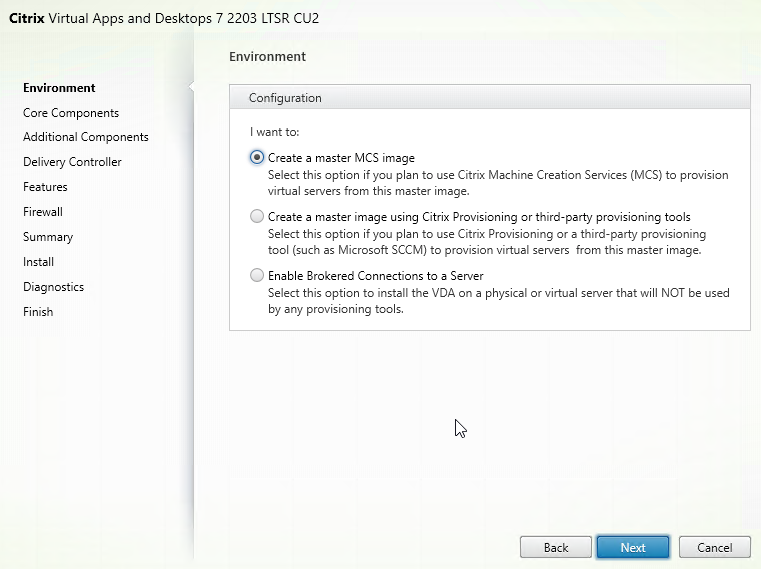
- Then open services.msc and restart the Omnissa Horizon Secure Gateway service or VMware Horizon View Security Gateway Component service.
- Repeat this process on the other Connection Servers.
- Go to Settings > Administrators. On the right, switch to the tab named Role Privileges. Click Add.


Install Cert Manually
Alternatively, install a certificate without using Horizon Console:
- Run certlm.msc. Or run mmc, add the Certificates snap-in, and point it to Computer > Local Machine.
- Request a new certificate with a common name that matches the FQDN of the Connection Server or import a wildcard certificate.
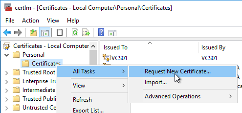
- Note: the private key must be exportable. If using the Computer template, click Details, and then click Properties.
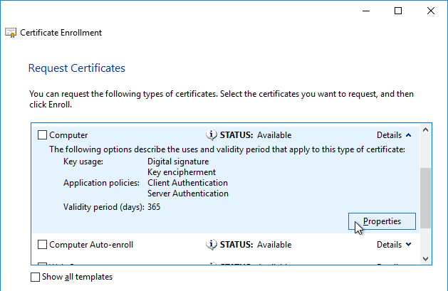
- On the Private Key tab, click Key options to expand it, and check the box next to Mark private key as exportable.
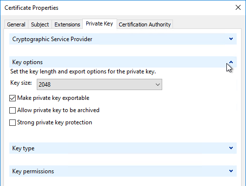
- In the list of certificates, look for the one that is self-signed. The Issuer will be the local computer name instead of a Certificate Authority. Right-click it, and click Properties.
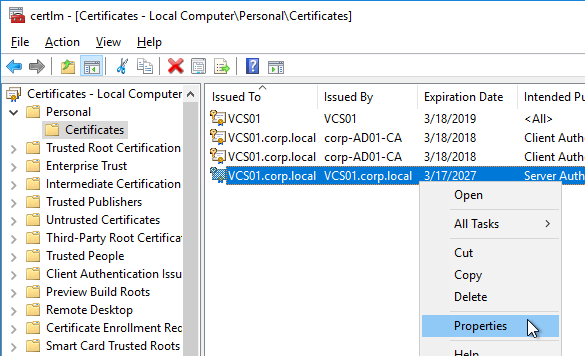
- On the General tab, clear the Friendly name field, and click OK.
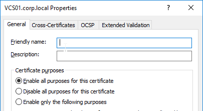
- Right-click your Certificate Authority-signed certificate, and try to export it.
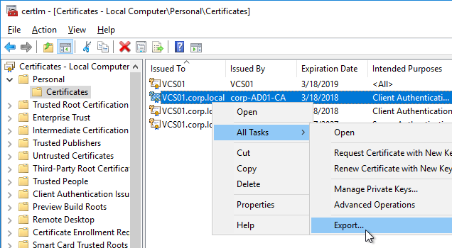
- On the Export Private Key page, make sure Yes, export the private key is selectable. If the option to export the private key is grayed out, then this certificate will not work. Click Cancel.
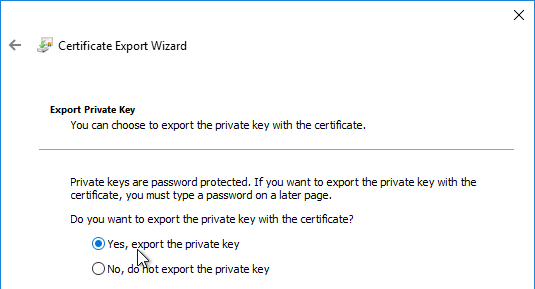
- Right-click your Certificate Authority-signed certificate, and click Properties.
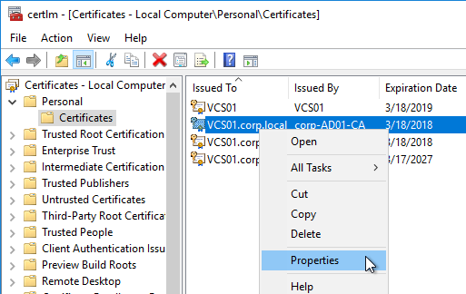
- On the General tab, in the Friendly name field, enter the text vdm, and click OK. Note: only one certificate can have vdm as the Friendly name.
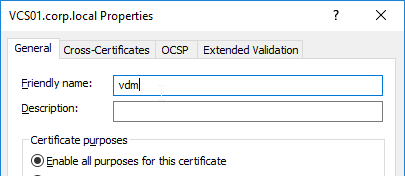
- Then open services.msc and restart the Omnissa Horizon Secure Gateway service or VMware Horizon View Security Gateway Component service. It will take several minutes before you can connect to Horizon Administrator Console.
- Horizon Console > Monitor > Dashboard > System Health > View > Components > Connection Servers should show the Machine Identity Certificate as Valid.


Horizon Portal – Client Installation Link
If you point your browser to the Horizon Connection Server (without /admin in the path), the Install Omnissa Horizon Client link redirects to the Omnissa.com site for downloading of Horizon Clients. You can change it so that the Horizon Clients can be downloaded directly from the Horizon Connection Server.

- These instructions changed in Connection Server 2406.
- On the Horizon Connection Server, go to C:\Program Files\Omnissa\Horizon\Server\broker\webapps\portal or C:\Program Files\VMware\VMware View\Server\broker\webapps\portal.
- Create a new folder called downloads.
- Copy the downloaded Horizon Client 2503 for Windows to the new C:\Program Files\Omnissa\Horizon\Server\broker\webapps\portal\downloads folder.
- Run Notepad as administrator.
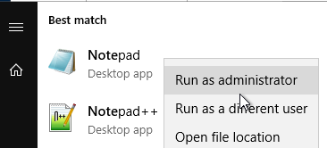
- Open the file C:\ProgramData\Omnissa\Horizon\portal\portal-links-web-client.properties or C:\ProgramData\VMware\VDM\portal\portal-links-html-access.properties file with a text editor (as Administrator).
- Go back to the downloads folder and copy the Horizon Client filename.
-
In Notepad, modify link.win32 and link.win64 by specifying the relative path to the Horizon Client executable under /downloads. There's only one Horizon client for both 32-bit and 64-bit. The following example shows a link for the Horizon win64 client.
-
Then Save the file.
- Restart the Omnissa Horizon Servlet Host service or the VMware Horizon View Web Component service or restart the entire Connection Server.
- It will take a few seconds for the ws_TomcatService process to start, so be patient. If you get a 503 error, then the service is not done starting.
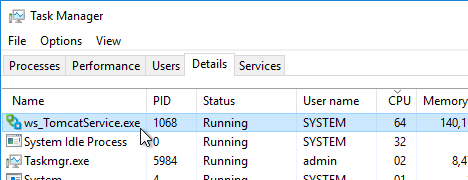
- Now when you click the link to download the client, it will grab the file directly from the Horizon Connection Server.
- Repeat these steps on each Connection Server.


Portal Branding
Paolo Valsecchi at VMware Horizon 8: customize the login page details how to brand the Horizon portal page.

LDAP Edits
Mobile Client - Save Password
If desired, you can configure Horizon Connection Server to allow mobile clients (iOS, Android) to save user passwords.
- On the Horizon Connection Server, run ADSI Edit (adsiedit.msc).
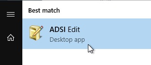
- Right-click ADSI Edit, and click Connect to.
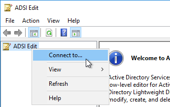
- Change the first selection to Select or type a Distinguished Name, and enter dc=vdi,dc=vmware,dc=int.
- Change the second selection to Select or type a domain or server, and enter localhost. Click OK.
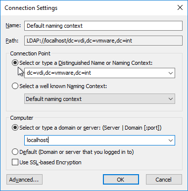
- Navigate to Properties > Global. On the right, double-click CN=Common.
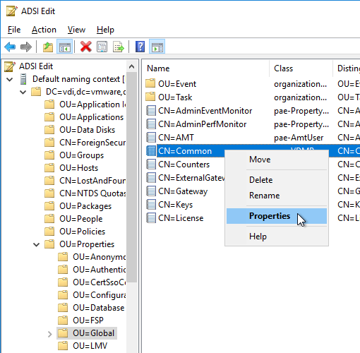
- Scroll down, click to highlight pae-ClientCredentialCacheTimeout, and click Edit.
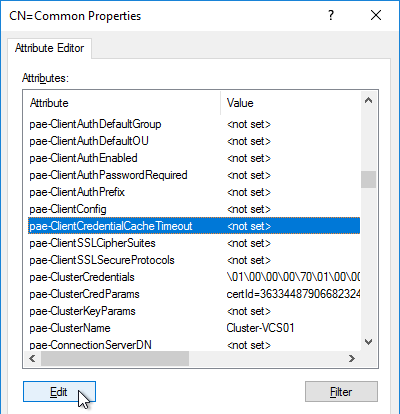
- Enter a value in minutes. 0 = no saving of credentials. -1 = no timeout. Click OK.
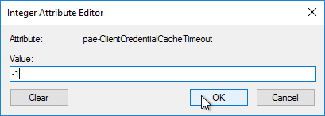
Biometric Authentication - iOS Touch ID, iOS Face ID, Fingerprints, Windows Hello
Biometric authentication, including Touch ID, Face ID, and Fingerprints, is disabled by default. To enable: (source = Configure Biometric Authentication at Omnissa Docs)
- On the Horizon Connection Server, run ADSI Edit (adsiedit.msc).
- Right-click ADSI Edit and click Connect to…
- Change the first selection to Select or type a Distinguished Name and enter dc=vdi,dc=vmware,dc=int.
- Change the second selection to Select or type a domain or server and enter localhost. Click OK.
- Navigate to Properties > Global. On the right, double-click CN=Common.
- Find the attribute pae-ClientConfig and double-click it.
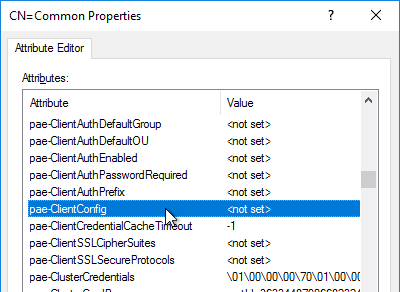
- Enter the line
BioMetricsTimeout=-1, and click Add. Click OK. The change takes effect immediately.
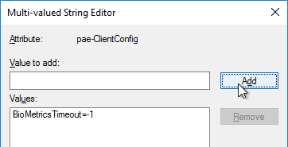
Load Balancing
See Carl Stalhood’s Horizon Load Balancing using Citrix NetScaler.
Remote Desktop Licensing
If you plan to build RDS Hosts, then install Remote Desktop Licensing somewhere. You can install it on your Horizon Connection Servers by following the procedure at ../delivery-controller-2402-ltsr-and-licensing/#rdlicensing.
Antivirus
Omnissa Tech Zone Antivirus Considerations in a Horizon Environment: exclusions for Horizon View, App Volumes, User Environment Manager, ThinApp
Help Desk Tool Timing Profiler
Run the following command to enable the timing profiler on each Connection Server instance to view logon segments in the Help Desk tool. See Omnissa Docs for more info.
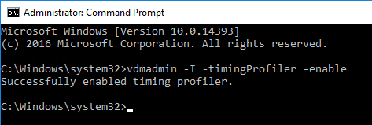
Related Pages
- Back to Omnissa Horizon 8